library(ggplot2)Visualización de datos - DC
Introducción
Primer gráfico con ggplot
Para tener un primer acercamiento sobre la visualización de datos con R, demos un acercamiento a ggplot. Carguemos el paquete con
y procedamos a explorar un conjunto de datos ya presente en R: mtcars. Este conjunto de datos es pequeño y muy ilustrativo. Lo examinaremos con la función str().
str(mtcars)'data.frame': 32 obs. of 11 variables:
$ mpg : num 21 21 22.8 21.4 18.7 18.1 14.3 24.4 22.8 19.2 ...
$ cyl : num 6 6 4 6 8 6 8 4 4 6 ...
$ disp: num 160 160 108 258 360 ...
$ hp : num 110 110 93 110 175 105 245 62 95 123 ...
$ drat: num 3.9 3.9 3.85 3.08 3.15 2.76 3.21 3.69 3.92 3.92 ...
$ wt : num 2.62 2.88 2.32 3.21 3.44 ...
$ qsec: num 16.5 17 18.6 19.4 17 ...
$ vs : num 0 0 1 1 0 1 0 1 1 1 ...
$ am : num 1 1 1 0 0 0 0 0 0 0 ...
$ gear: num 4 4 4 3 3 3 3 4 4 4 ...
$ carb: num 4 4 1 1 2 1 4 2 2 4 ...Ahora que conocemos un poco de la estructura de mtcars, obtengamos de él un gráfico de dispersión utilizando ggplot() con cyl como la variable x y mpg como la variable y.
ggplot(data = mtcars, mapping = aes(x = cyl, y = mpg)) +
geom_point()El gráfico resultante no es del todo adecuado, ya que muestra espacios vacíos en el eje x, pero como acercamiento es correcto. Si queremos mejorarlo, debemos convertir la variable cyl en una variable categórica, ya que es tratada como numérica por ggplot. Esto lo conseguimos con el siguiente comando:
ggplot(data = mtcars, mapping = aes(x = factor(cyl), y = mpg)) +
geom_point()Podemos notar que ahora ya solo se muestran valores existentes en el conjunto de datos.
Gramática de gráficos y sus capas
Observemos detenidamente la estructura del comando anterior. ggplot sigue algo conocido como la gramática de gráficos. Ésta consiste de tres elementos básicos: los datos o variables de interés, las escalas en las que mapearemos dichos datos (las estéticas) y los elementos visuales usados para nuestros datos (las geometrías). De manera opcional, entra una cuarta capa, los temas.
Entre las Estéticas podemos encontrar los ejes x y y, el color de contorno o relleno de las formas, el tamaño, las etiquetas, transparencias, el tipo de forma, la anchura o el tipo de línea dibujada.
Para el caso de las Geometrías (que en delante llamaremos geom) se pueden contar los tipos de gráfico: línea (line), puntos (points), histograma (histogram), caja (boxplot) o barras (bar).
Entremos un poco más en estos tres conceptos: datos, estéticas y geoms. Agreguemos color a nuestro gráfico, utilizando una de las variables de los datos. El argumento color debe colocarse dentro de aes().
ggplot(data = mtcars, mapping = aes(x = wt, y = mpg, color = disp)) +
geom_point()Enseguida haremos que el tamaño de las formas depende precisamente de la variable ya usada, disp.
ggplot(data = mtcars, mapping = aes(x = wt, y = mpg, size = disp)) +
geom_point()Sin embargo, hay que tener cuidado con el hecho de que una variable continua no debe ser mapeada con shape. Por ende, shape no existe en una escala continua.
Capa datos
La gramática de gráficos utiliza el concepto de capas para la construcción de gráficos. La capa más inferior es la que se corresponde con los datos.
Para esta sección se trabajará con el ya clásico conjunto de datos llamado iris, que recoge información de tres especies de lirios: setosa, versicolor y virginica. Fueron tomadas cuatro mediciones de cada planta: tanto la longitud y anchura de pétalos como las de los sépalos. Los pétalos se identifican usualmente como la parte colorida de las flores, mientras que los sépalos son las hojas externas de color verde de las mismas flores, aunque cabe mencionar que en el caso de los lirios, los sépalos son coloridos también. El conjunto de datos iris contiene cinco variables: el nombre de especie y las cuatro mediciones mencionadas antes.
Capa estética
Esta capa nos indica cuál es la escala y la manera en la que mapearemos nuestros datos, es decir, definiremos el tipo de gráfico y sus ejes, por lo que de manera indirecta también quedará determinado el rango de visión de nuestros datos.
Continuando con el ejemplo del conjunto iris, crearemos un gráfico de dispersión cuyos ejes x y y serán asociados con la longitud y la anchura de los sépalos, respectivamente.
Capa geometría
Este último elemento nos permite elegir cómo se verá el gráfico. Resulta algo contradictorio que la capa estética se encargue de lo geométrico y la capa geometría de lo visual. Pero así trabaja ggplot.
Con la información provista por las tres capas, es posible crear ya un gráfico simple, quizá algo rústico, pero funcional.
Capa tema
Si deseamos darle mayor claridad o facilidad de interpretación a nuestro gráfico, echaremos mano de una capa opcional: tema.
Agregando geometrías
Trabajemos con el set de datos conocido como diamonds, que incluye información sobre diamantes. Exploremos su contenido
str(diamonds)tibble [53,940 × 10] (S3: tbl_df/tbl/data.frame)
$ carat : num [1:53940] 0.23 0.21 0.23 0.29 0.31 0.24 0.24 0.26 0.22 0.23 ...
$ cut : Ord.factor w/ 5 levels "Fair"<"Good"<..: 5 4 2 4 2 3 3 3 1 3 ...
$ color : Ord.factor w/ 7 levels "D"<"E"<"F"<"G"<..: 2 2 2 6 7 7 6 5 2 5 ...
$ clarity: Ord.factor w/ 8 levels "I1"<"SI2"<"SI1"<..: 2 3 5 4 2 6 7 3 4 5 ...
$ depth : num [1:53940] 61.5 59.8 56.9 62.4 63.3 62.8 62.3 61.9 65.1 59.4 ...
$ table : num [1:53940] 55 61 65 58 58 57 57 55 61 61 ...
$ price : int [1:53940] 326 326 327 334 335 336 336 337 337 338 ...
$ x : num [1:53940] 3.95 3.89 4.05 4.2 4.34 3.94 3.95 4.07 3.87 4 ...
$ y : num [1:53940] 3.98 3.84 4.07 4.23 4.35 3.96 3.98 4.11 3.78 4.05 ...
$ z : num [1:53940] 2.43 2.31 2.31 2.63 2.75 2.48 2.47 2.53 2.49 2.39 ...Podemos notar que cuenta con varias variables, de las cuales nos interesan carat (una medida del tamaño de los diamantes) y price (se corresponde con el precio).
Vamos a crear un gráfico de dispersión que relacione estas variables. Queremos dejar el precio como la variable dependiente, así que ejecutemos los siguientes comandos:
ggplot(data = diamonds, mapping = aes(x = carat, y = price)) +
geom_point()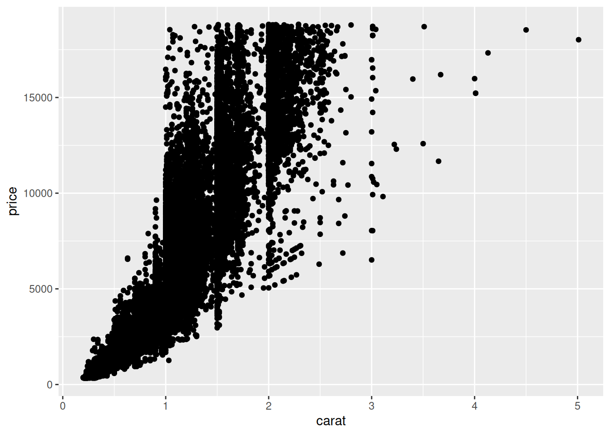
Ahora queremos agregar una línea de tendencia suavizada a nuestro gráfico. Simplemente añadimos una capa de geometría más utilizando la misma lógica, con geom_smooth():
ggplot(data = diamonds, mapping = aes(x = carat, y = price)) +
geom_point() +
geom_smooth()`geom_smooth()` using method = 'gam' and formula = 'y ~ s(x, bs = "cs")'Mapeos globales y locales
Es posible modificar los mapeos de manera general o que afecten a geometrías específicas. Si deseamos hacerlo globalmente, la modificación la realizaremos en la línea correspondiente a ggplot. En caso contrario modificamos la línea correspondiente a la geometría en sí. Cambiemos el color de ambas geometrías utilizando la variable incluida en el set de datos llamada clarity asignada al argumento color de ggplot:
ggplot(data = diamonds, mapping = aes(x = carat, y = price, color = clarity)) +
geom_point() +
geom_smooth()`geom_smooth()` using method = 'gam' and formula = 'y ~ s(x, bs = "cs")'La geometría geom_point() cuenta con un argumento llamado alpha que controla la opacidad de los puntos mostrados, cuyos valores van de 0 a 1. Un valor de 1 implica toyal opacidad y uno de 0 la transparencia máxima: invisibilidad. Dibujemos los puntos un 40% más transparentes para facilitar su lectura, modificando el mapeo únicamente para la geometría de dispersión.
ggplot(data = diamonds, mapping = aes(x = carat, y = price, color = clarity)) +
geom_point(aes(alpha = 0.4)) +
geom_smooth()`geom_smooth()` using method = 'gam' and formula = 'y ~ s(x, bs = "cs")'Guardando los gráficos como variables
Es posible almacenar los plots como variables, utilizando la asignación común en R. Sin embargo, es usual que se asigne solo las capas datos y estética, dejando las geometrías para después.
Creemos la variable plot_price_vs_carat y asignemos el gráfico a la misma
plot_price_vs_carat <- ggplot(data = diamonds, mapping = aes(x = carat, y = price))El comando anterior crea el gráfico pero no lo muestra pues falta la geometría. La agregamos y mostramos con
plot_price_vs_carat + geom_point()
La utilidad de trabajar con los gráficos almacenados en variables es que nos permite crear y modificar de manera libre, ya que siempre podemos recuperar el original llamando a la variable. Vamos a crear otro gráfico con transparencias al 20%, asignando el original a otra variable y modificando ésta con aes().
trans_plot <- plot_price_vs_carat + geom_point(aes(alpha = 0.2))Para visualizar nuestro gráfico basta con llamar la variable:
trans_plotTambién podemos hacer lo mismo con el color y otra variable.
byclarity_plot <- plot_price_vs_carat + geom_point(aes(color = clarity))
byclarity_plotEstéticas visibles
Ya hemos visto que los ejes cartesianos son estéticas, al igual que otras características como el color o la transparencia. Hay más. Veamos cuáles son y hagamos unas cuantas aclaraciones.
Tenemos size, que se refiere al grosor de los puntos y líneas. Mientras que es importante saber que color es para definir el color de líneas y puntos o el contorno de las figuras más complejas. Si deseamos modificar el color de relleno de estas figuras, debemos utilizar fill. Si por lo contrario, queremos modificar el tipo de línea, utilizamos la estética linetype. Para modificar el texto en los ejes o gráficos usaremos la estética label y para finalizar, mencionemos shape, que permite cambiar la forma de los puntos.
color, shape and size
Volvamos a nuestro conjunto de datos llamado mtcars para aplicar las estéticas a una de sus variables, la categórica cyl. Estas estéticas van incluidas en aes() y cabe decir que por convención no es necesario nombrar los argumentos x y y. Sin embargo, lo seguiremos haciendo por claridad.
No olvidemos que la variable cyl es categórica pero la usaremos como factor. Creemos un gráfico de dispersión con wt como la variable independiente, mpg como la dependiente y fcyl como la estética color.
ggplot(data = mtcars, mapping = aes(x = wt, y = mpg, color = factor(cyl))) +
geom_point()Agreguemos un par de estéticas más: shape y size pero en este caso serán aplicadas a la geometría. Les daremos los valores de 1 y 4, respectivamente.
ggplot(data = mtcars, mapping = aes(x = wt, y = mpg, color = factor(cyl))) +
geom_point(shape = 1, size = 4)color contra fill
Ya se mencionó antes que la estética color modifica el contorno de una geometría y fill cambia el relleno de la misma. El gráfico de dispersión, al trabajar con puntos, asume que estos no cuentan con relleno, a menos que se modifique la figura de los mismos. Por defecto, la forma shape del punto es 19 y esta solo admite cambios en el contorno. Sin embargo, si cambiamos shape = 21 podremos cambiar el relleno también.
Trabajemos con las variables cyl y am convertidas a factores y hagamos que la primera se refiera ahora a fill y no a color, además de modificar la forma a 21 y agreguemos una transparencia de 0.6.
ggplot(data = mtcars, mapping = aes(x = wt, y = mpg, fill = factor(cyl))) +
geom_point(shape = 21, size = 4, alpha = 0.6)Creemos ahora un mapeo de la variable fam a la estética color:
ggplot(data = mtcars, mapping = aes(x = wt, y = mpg, fill = factor(cyl), color = factor(am))) +
geom_point(shape = 21, size = 4, alpha = 0.6)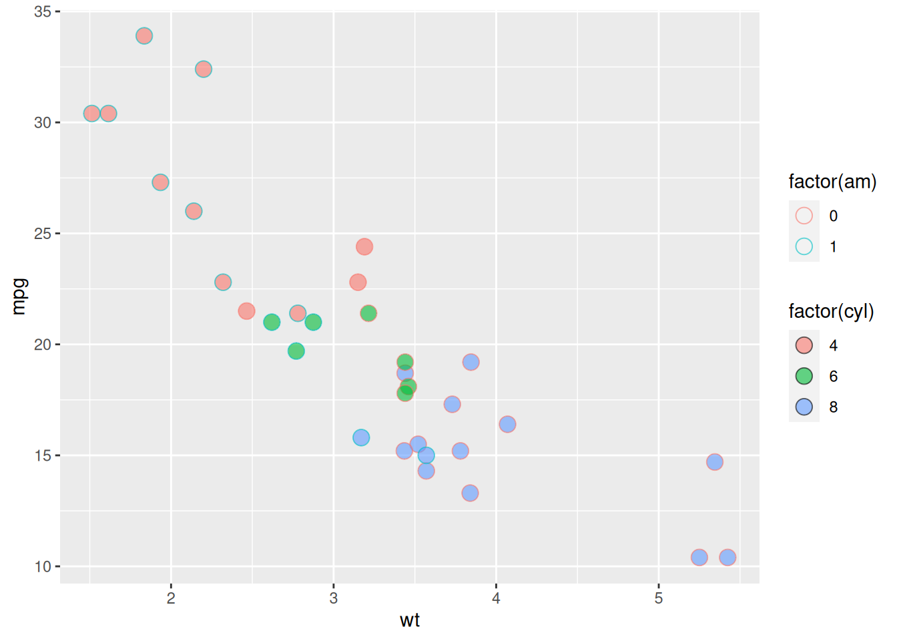
Comparando estéticas
No olvidemos que modificar los atributos pueden acarrear problemas. Por ejemplo, pueden sobrescribir las estéticas del gráfico. Para ejemplificar esto, construyamos un plot más.
plot_mpg_vs_wt <- ggplot(data = mtcars, mapping = aes(x = wt, y = mpg)) +
geom_point(aes(size = factor(cyl)))Cambiemos el mapeado. Esta vez, factor(cyl) debería ser mapeado como alpha:
plot_mpg_vs_wt <- ggplot(data = mtcars, mapping = aes(x = wt, y = mpg)) +
geom_point(aes(alpha = factor(cyl)))Y si lo cambiamos a shape:
plot_mpg_vs_wt <- ggplot(data = mtcars, mapping = aes(x = wt, y = mpg)) +
geom_point(aes(shape = factor(cyl)))Ahora resulta que en realidad debemos usar otro tipo de gráfico. Cambiemos el de dispersión por uno de texto. Además mapearemos factor(cyl) como label:
plot_mpg_vs_wt <- ggplot(data = mtcars, mapping = aes(x = wt, y = mpg)) +
geom_text(aes(label = factor(cyl)))
plot_mpg_vs_wt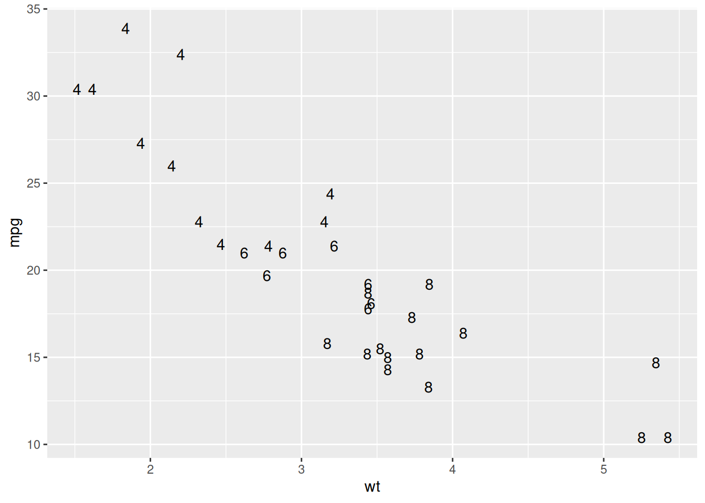
Atributos color, shape, size and alpha
Esta vez utilizaremos argumentos para configurar los atributos del gráfico, no mapeando variables como estéticas.
Los colores en R pueden especificarse utilizando códigos hex, una almohadilla seguida por dos números hexadecimales por cada color RGB (rojo, verde y azul). Este es un sistema de numeración base 16 y se mira así: #RRGGBB. Tenemos números desde 0 a 9 y letras como la A representando 10 hasta F representando 15. Las parejas de números hexadecimales pueden dar un rango de 0 a 255. Ejemplos típicos son el negro (#000000) y el blanco (#FFFFFF).
Para estos ejercicios, usaremos el color #4ABEFF. Vamos a usarlo como el color de los puntos de nuestro gráfico de dispersión con una transparencia del 60%:
mi_color <- "#4ABEFF"
ggplot(data = mtcars, mapping = aes(x = wt, y = mpg)) +
geom_point(color = mi_color, alpha = 0.6)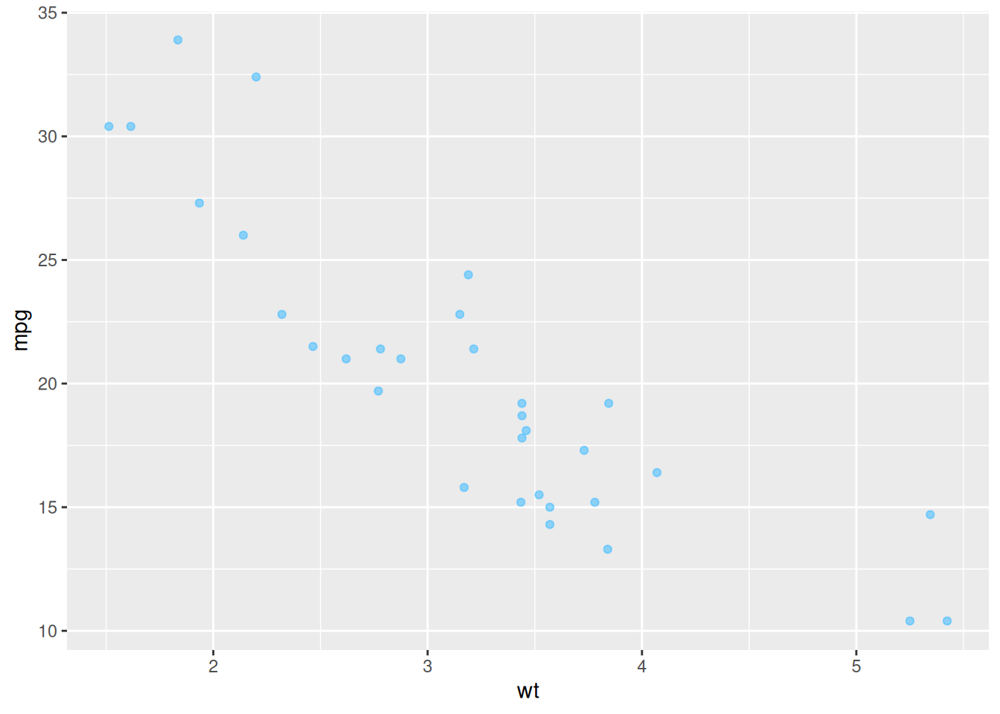
Modifiquemos un poco, ahora utilizaremos fill en lugar de color. Además, cambiaremos la forma y el tamaño de nuestros puntos:
ggplot(data = mtcars, mapping = aes(x = wt, y = mpg, fill = factor(cyl))) +
geom_point(color = mi_color, size = 10, shape = 1)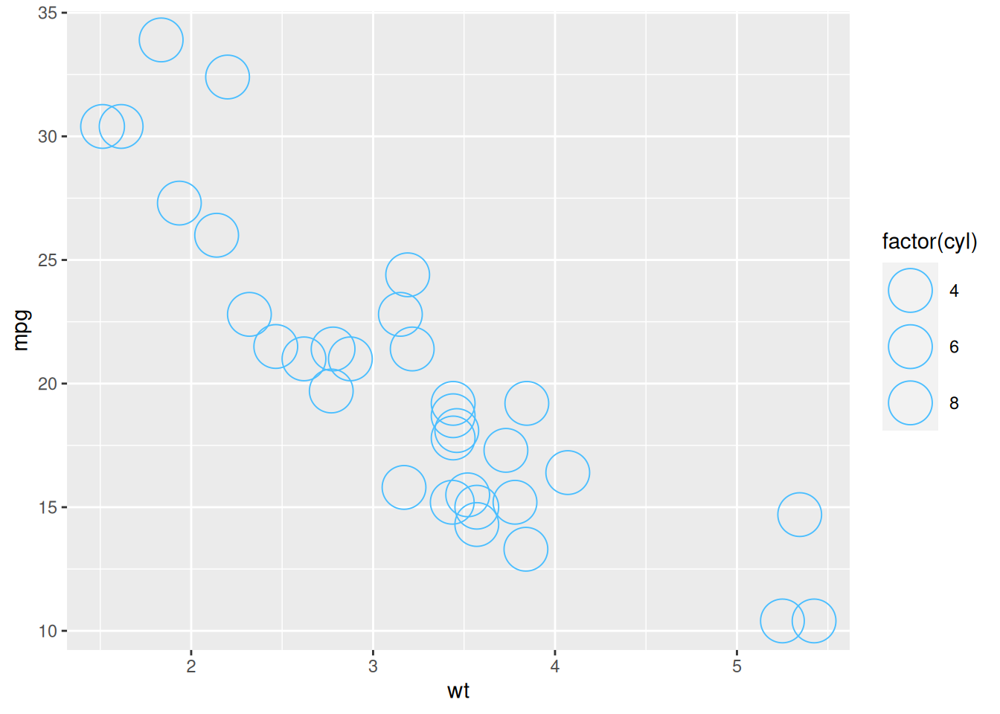
Conflictos con las estéticas
Las estéticas pueden usarse como atributos. Veamos un ejemplo
ggplot(data = mtcars, mapping = aes(x = wt, y = mpg, color = factor(cyl))) +
geom_point(alpha = 0.5)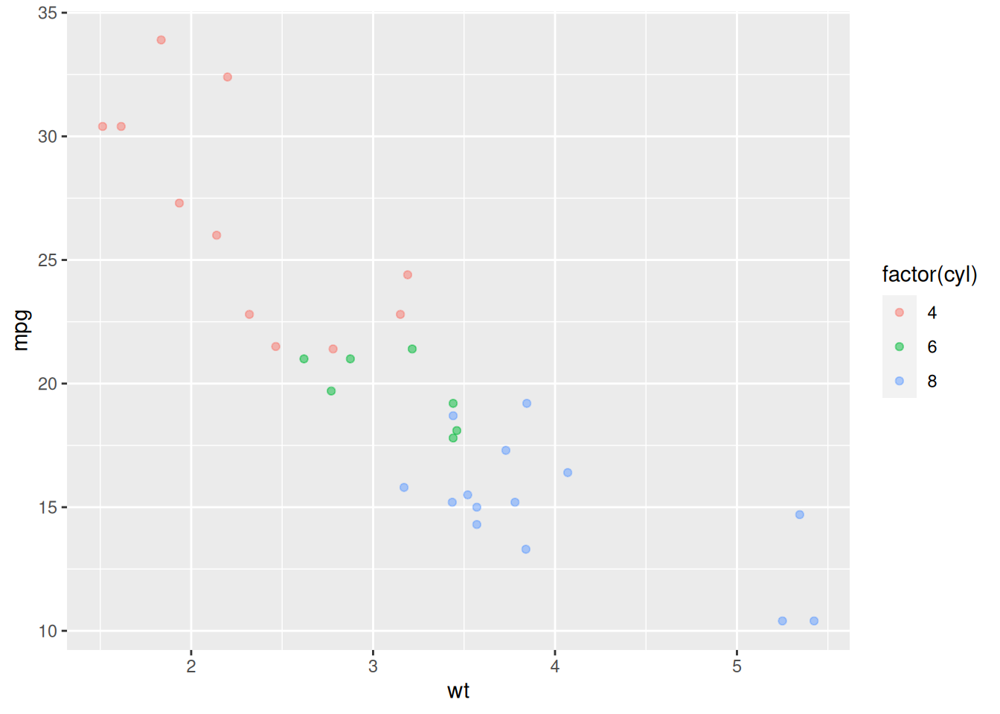
Ahora volvamos a crear un gráfico de texto con los nombres de las columnas del set de datos. Esto se consigue con rownames():
ggplot(data = mtcars, mapping = aes(x = wt, y = mpg, color = factor(cyl))) +
geom_text(label = rownames(mtcars), color = "red")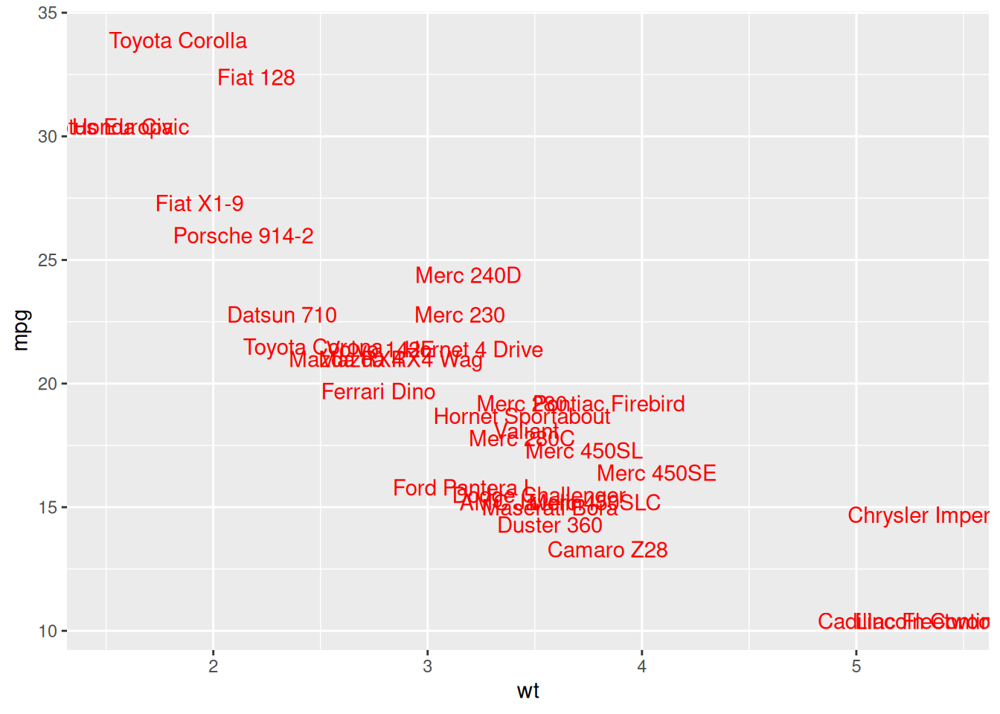
Creemos otro gráfico de dispersión pero con distintos forma y color:
ggplot(data = mtcars, mapping = aes(x = wt, y = mpg, color = factor(cyl))) +
geom_point(shape = 24, color = "yellow")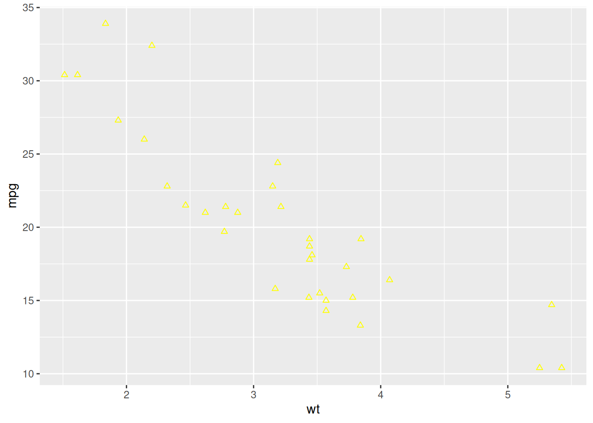
Podemos notar que las estéticas definidas no se cumplieron, quedando en su lugar el color determinado en la geometría.
Haciendo todo lo posible
En este ejercicio agregaremos más capas estéticas al gráfico. Seguiremos trabajando con mtcars, pero ahora con más propiedades de los coches. Debemos tener en cuenta que agregar más estéticas no siempre resulta ser la mejor idea, ya que se aumenta la complejidad y se disminuye la claridad de lectura.
Creemos un gráfico de dispersión de qsec contra mpg, coloreado por cyl.
ggplot(data = mtcars, mapping = aes(x = mpg, y = qsec, color = factor(cyl))) +
geom_point()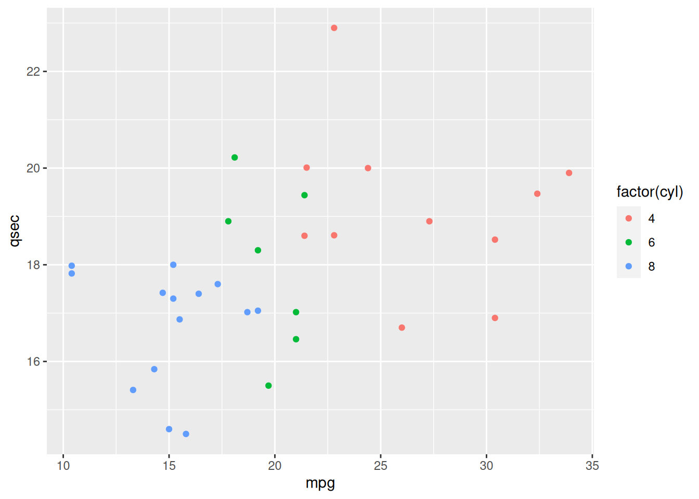
Agreguemos am como la estética shape:
ggplot(data = mtcars, mapping = aes(x = mpg, y = qsec, color = factor(cyl), shape = factor(am))) +
geom_point()
Hagamos esto más cargado. Mapeemos el resultado de dividir hp entre wt como la estética size
ggplot(data = mtcars, mapping = aes(x = mpg, y = qsec, color = factor(cyl), shape = factor(am), shape = hp / wt)) +
geom_point()Warning: Duplicated aesthetics after name standardisation: shape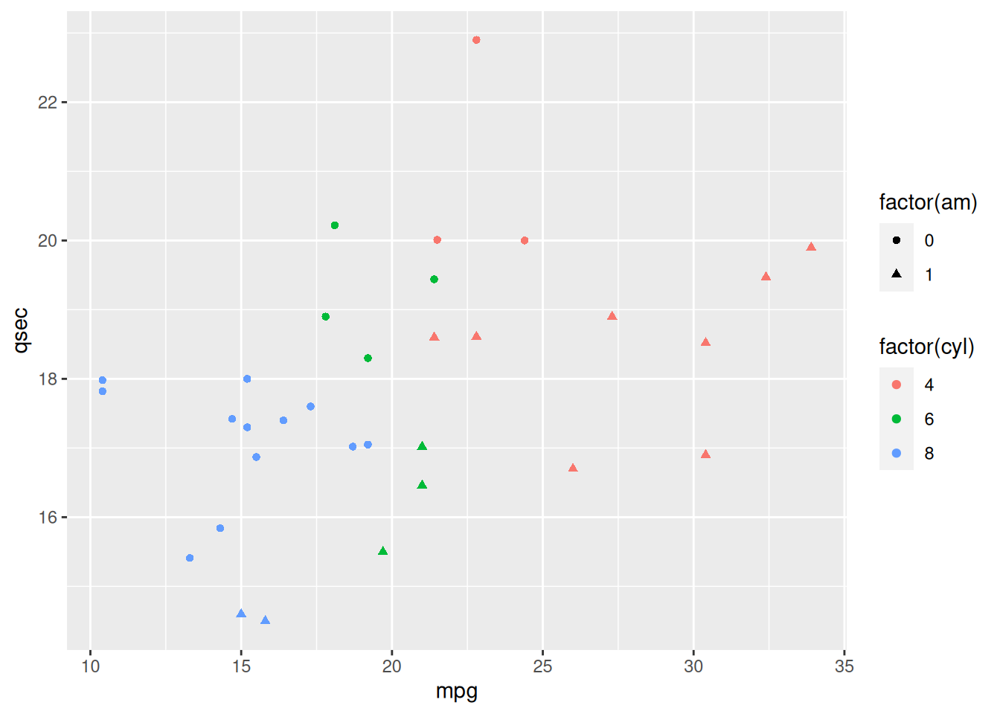
Actualizando etiquetas estéticas
En este ejercicio modificaremos algunas estéticas para elaborar un gráfico de barras del número de cilindros para coches con diferentes tipos de transmisión. Usaremos algunas funciones para mejorar la apariencia del gráfico:
labs()para configurar las etiquetas de los ejes x y y. Necesita cadenas como argumentos.scale_fill_manual()define propiedades de la escala de color. El primer argumento define el título de las leyendas.valueses un vector de colores llamado para usar.
Crearemos un gráfico de barras cuyo eje x llamaremos “Número de cilindros” y eje y “Conteo”, usando los argumentos x y y de labs(), respectivamente.
ggplot(data = mtcars, mapping = aes(x = factor(cyl), fill = factor(am))) +
geom_bar() +
labs(x = "Number of cylinders", y = "Count")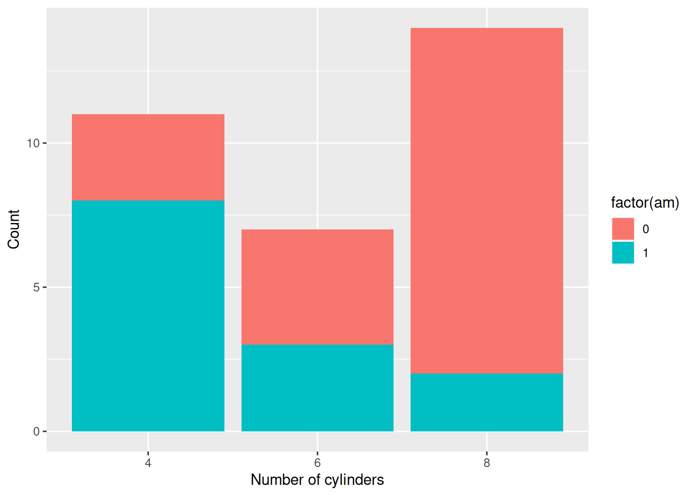
Notemos que ahora ya tenemos tres capas, siendo la última la configuración de los títulos de ejes.
Supongamos que queremos modificar los colores de relleno de nuestro gráfico. Lo haremos agregando una nueva capa con scale_fill_manual() y escribiendo como argumentos el título “Transmission” y el vector donde almacenamos los nuevos colores:
paleta <- c(automatic = "#377EB8", manual = "#E41A1C")
ggplot(data = mtcars, mapping = aes(x = factor(cyl), fill = factor(am))) +
geom_bar() +
labs(x = "Number of cylinders", y = "Count") +
scale_fill_manual("Transmission", values = paleta)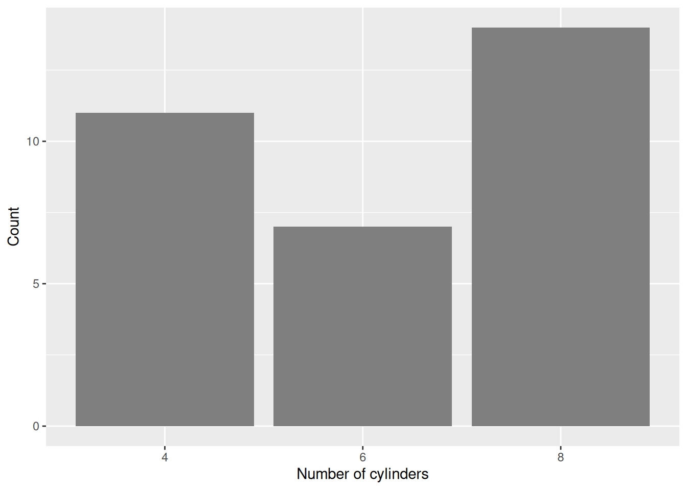
Podemos darnos cuenta que no se aplicó ningún color. Esto se debe a un aspecto interno de la conversión a factor() de la variable am. Cuando convirtamos a factor una variable y necesitemos incluir etiquetas diferentes a las que tiene por defecto, debemos agregar las nuevas etiquetas en la propia conversión a factor y no en la nueva variable, por ejemplo:
paleta <- c("#377EB8", "#E41A1C")
ggplot(data = mtcars, mapping = aes(x = factor(cyl),
fill = factor(am, labels = c("Automatic", "Manual")))) +
geom_bar() +
labs(x = "Number of cylinders", y = "Count") +
scale_fill_manual("Transmission", values = paleta)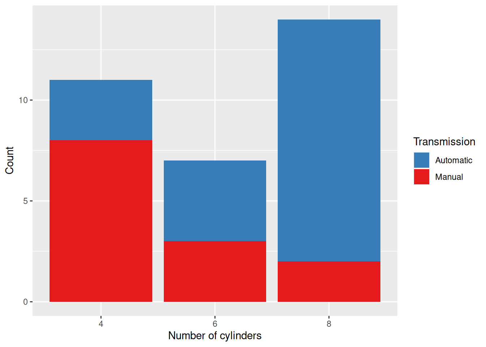
Pues necesitamos que las barras correspondientes a cada tipo de transmisión se muestren una al lado de la otra. Modificamos el argumento position igualado a "dodge", cuidando de colocar las comillas simples.
paleta <- c("#377EB8", "#E41A1C")
ggplot(data = mtcars, mapping = aes(x = factor(cyl),
fill = factor(am, labels = c("Automatic", "Manual")))) +
geom_bar(position = "dodge") +
labs(x = "Number of cylinders", y = "Count") +
scale_fill_manual("Transmission", values = paleta)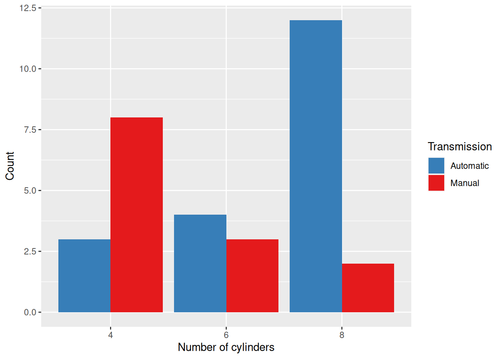
Configurando una estética vacía
Es posible crear gráficos univariables en ggplot(), sin embargo, siempre se crea un eje y aunque no lo pidamos. Si en algún momento necesitamos realmente omitir este eje, lo podemos mapear con un valor de 0.
Como ejemplo, crearemos un gráfico de dispersión con el eje y nulo. También agregaremos algo de ruido a nuestro gráfico, agregando jitter como atributo de la posición.
ggplot(data = mtcars, mapping = aes(x = mpg, y = 0)) +
geom_point(position = "jitter")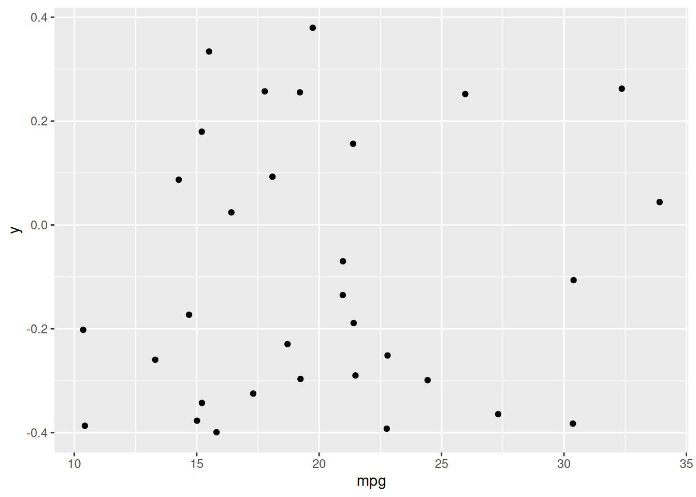
Otra manera de crear gráficos univariables es utilizando la geometría geom_jitter(). Podemos agregarle límites al gráfico utilizando la expresión ylim(), cuyo argumento pueden ser un vector con los dos límites inferior y superior, respectivamente o incluso ambos límites como si fueran dos argumentos.
ggplot(data = mtcars, mapping = aes(x = mpg, y = 0)) +
geom_jitter() +
ylim(-2, 2)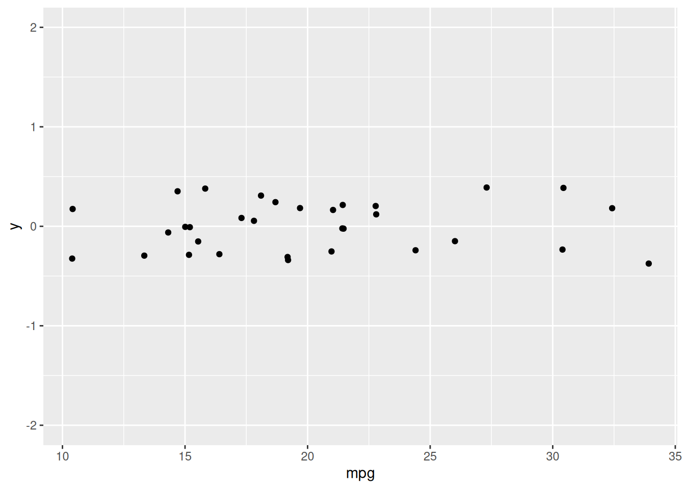